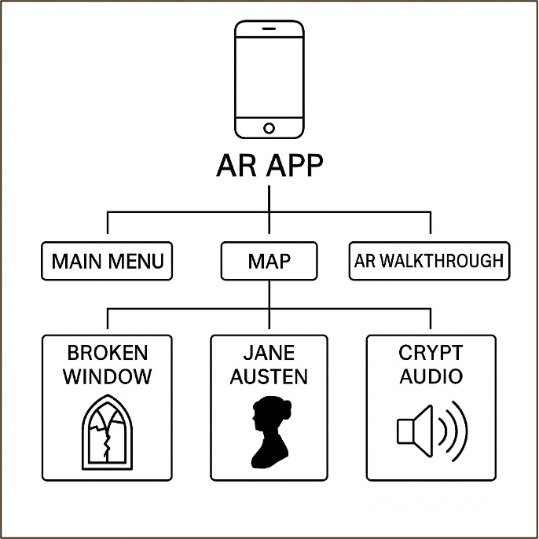
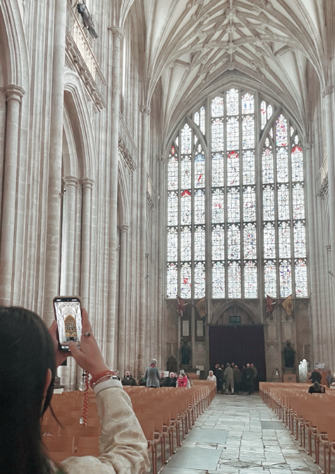
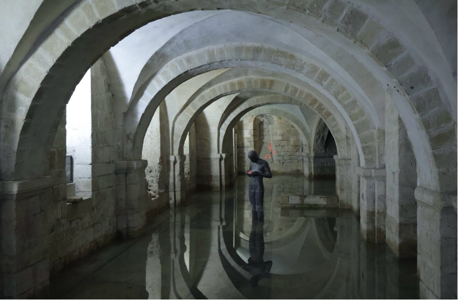
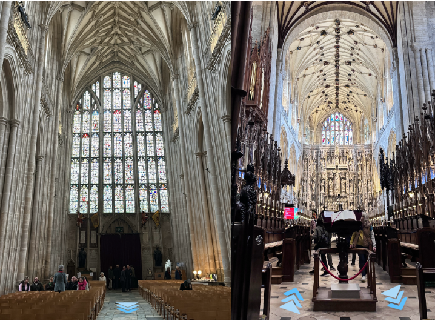

This wireframe presents a simplified structure of the Winchester Cathedral AR app, highlighting how users will navigate between the main modules.

Top-Level Structure
- The user begins from a mobile AR app, which offers three main navigation paths:
First Layer Navigation
- Main Menu
- General information
- App settings
- About / Help
- Map
- A location-aware interface showing the interactive zones in the cathedral
- Tapping hotspots will launch respective AR modules
- AR Walkthrough
- Step-by-step guided path through the cathedral
- Users follow AR arrows and receive sequential content along the way
Structure of Prototype Concept
The entire experience is divided into four main interactive modules, each representing an independent narrative theme, emotional tone, and interaction mode.
- West Window AR Interactive Scene
When users aim their device at the cathedral’s iconic west stained glass window, they first see a complete and splendid image. In an instant, it shatters revealing the fragmented, time-eroded reality. This moment intends to evoke a poetic yet shocking sense of historical rupture, prompting reflection on architectural decay and memory.

https://drive.google.com/file/d/1CnFsOTJq4q3bxV2aMIFutJUqTe5vmBlN/view?usp=sharing
- User Role: From observer to historical witness
- Interaction Tone: Dramatic, symbolic
- Narrative Function: Sparks audience reflection on historical destruction and architectural memory
2. Jane Austen Digital Presence Module
As visitors approach Jane Austen’s memorial, her digital portrait appears in real-time, introducing herself in the first person. Tapping her image plays her iconic quotes sequentially, showcasing her wit and tenderness.
- User Role: Participant in dialogue
- Interaction Tone: Intimate, gentle
- Narrative Function: Brings historical figures to life, fostering humanized emotional resonance
3. Basement Sound Sculpture Module
In the cathedral’s cellar, viewers encounter a mysterious sculptural form with a soft animation prompt inviting interaction. Upon clicking, deep choral singing fills the space, transforming the environment into a solemn, meditative atmosphere.

- User Role: Awakener of dormant memories
- Interaction Tone: Contemplative, atmospheric
- Narrative Function: Evokes invisible histories through sound, imbuing space with spiritual “echoes”
4. AR Arrow Navigation System
Dynamic blue arrows materialize on the cathedral floor, leading visitors to historical hotspots. At each destination, an info card pops up with architectural/historical context, turning the tour into a walking narrative journey.

- User Role: Spatial explorer
- Interaction Tone: Rhythmic, directional
- Narrative Function: Guides experience flow via movement, constructing storylines in physical space
Expected User Experience Flow
Users can start from any entry point (e.g., the West Window) to trigger the first AR segment. They can then choose to follow the arrow path or explore freely, unlocking diverse visual, voice, or sound experiences at different locations. The entire experience is non-linear yet purpose-driven, encouraging curiosity and reflection.
Summary
The prototype emphasizes presence, narrative rhythm, and poetic tone in the design phase. It eschews flashy technology or dense information, instead guiding users through a restrained approach to build delicate connections with history in physical space allowing architecture, memory, and narrative to converge in AR.